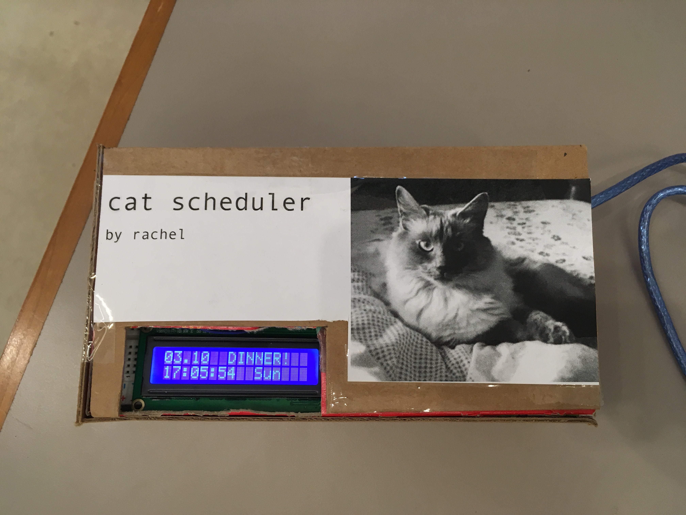
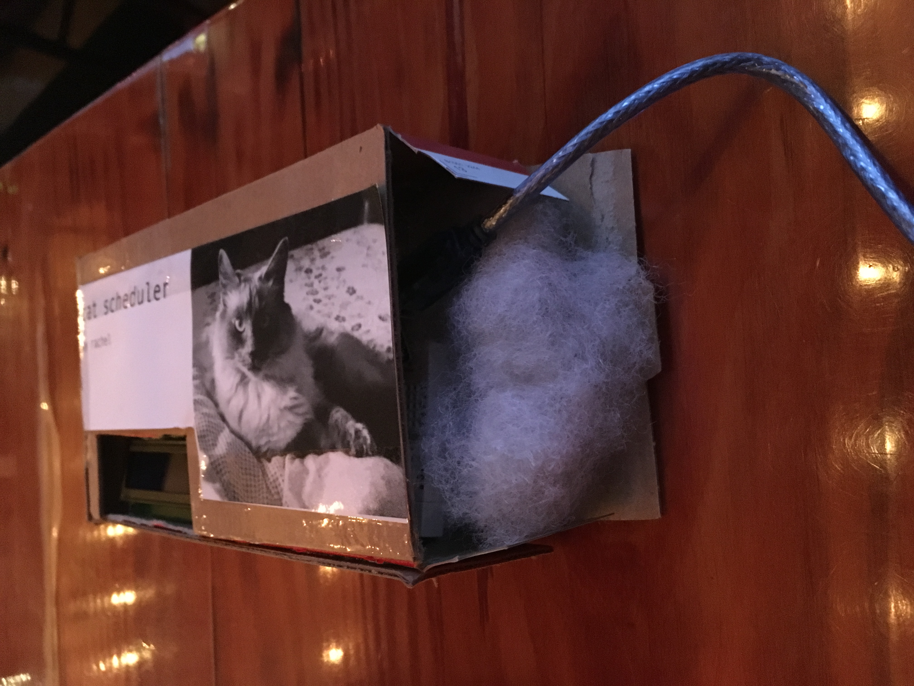
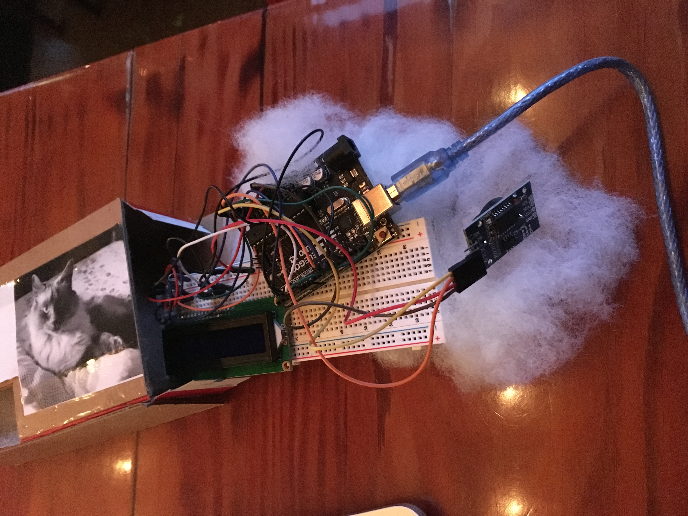
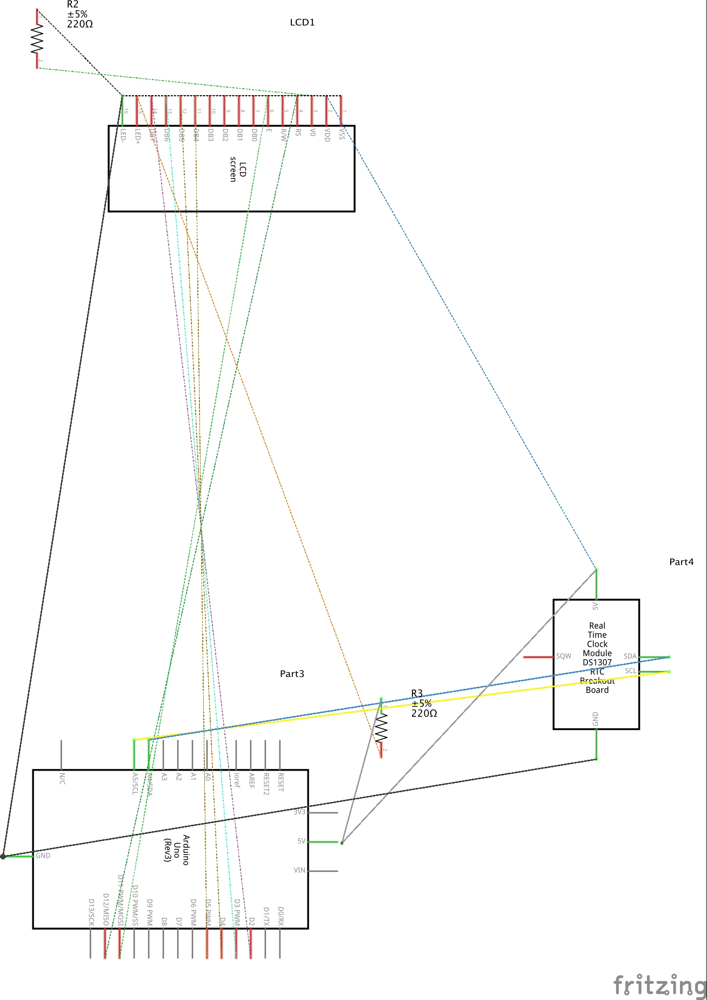
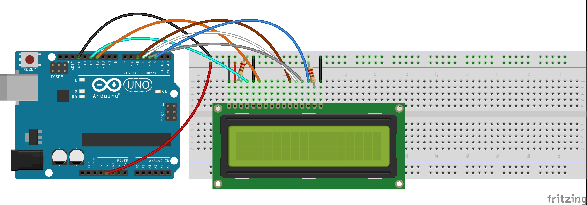
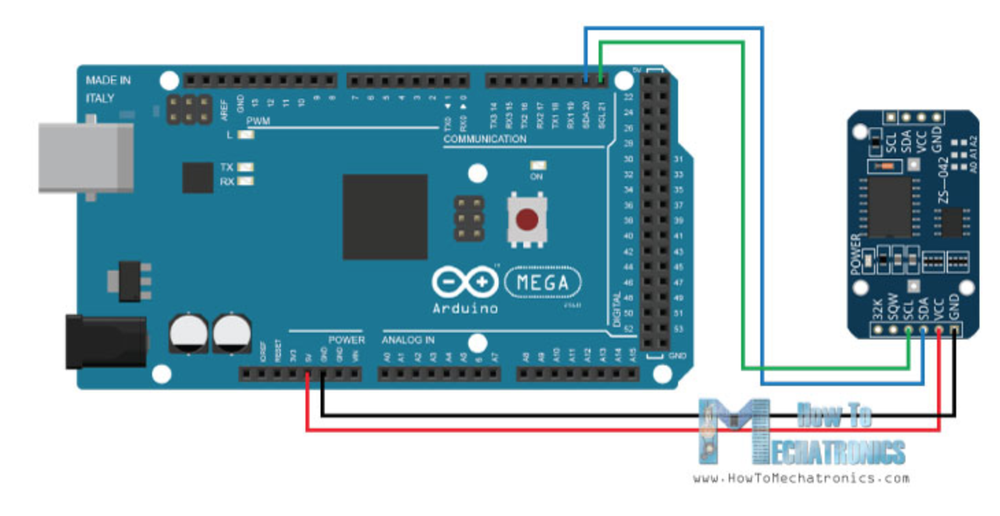

Final Project! Cat Scheduler
A clock with time-based prompts that reminds cat-owners when and what to do to help take care of their feline friends! There are prompts such as breakfast time at 8AM, taking your cat for a walk at 4PM, and cuddling with your cat at 6PM. Meow!



In this gif demo, you can see the RTC outputting real-time onto the LCD (seconds are changing)

Here is a link to my demo video: https://drive.google.com/file/d/1p6l8ACbID2HMlpxEbXgzCWYbBlzuGLRL/view?usp=sharing
Below are the setups and circuits:


Technical Write-Up: For this project, I incorporated three main parts: DS3231 Real Time Clock (RTC), Arduino, and LCD screen. The RTC uses the DS3231 library to track time. The RTC went through an initial setup to program in the real time and date, and a battery was placed inside of it so it was still able to internally track time even when disconnected from the USB port on my computer. Once the time was setup, it communicated to the arduino and time and date were captured into variables to output onto the LCD screen. From there, it was pretty straight forward going through each of the hours of the day and applying if-statements for each hour to accomplish a certain task.
// cat scheduler
// final project
// 03102019
// includes DX3231 RTC library
#include <DS3231.h>
// includes Liquid Crystal library for LCD screen
#include <LiquidCrystal.h> // includes the LiquidCrystal Library
// sets RTC to pins A4 and A5
DS3231 rtc(A4, A5);
// sets LCD screen to pins
LiquidCrystal lcd(12, 11, 5, 4, 3, 2); // Creates an LC object. Parameters: (rs, enable, d4, d5, d6, d7)
// initializes time String variables
String timevar = "00:00:00";
String comparetime = "00:00:00";
String dowvar = "Wednesday";
String datevar = "03.10.2019";
// Code from the Demo Example of the DS3231 Library
void setup()
{
// Setup Serial connection
Serial.begin(9600);
// Initialize the rtc object
rtc.begin();
lcd.begin(16,2);
// The following lines were used to setup the real-time on the DS3231 RTC
// rtc.setDOW(THURSDAY); // Set Day-of-Week to SUNDAY
// rtc.setTime(10, 46, 40); // Set the time to 12:00:00 (24hr format)
// rtc.setDate(3, 7, 2019); // Set the date to January 1st, 2014
}
// Post-RTC time setup, running code
void loop()
{
// Send Day-of-Week
Serial.print(rtc.getDOWStr());
Serial.print(" ");
// Send date
Serial.print(rtc.getDateStr());
Serial.print(" -- ");
// Send time
Serial.println(rtc.getTimeStr());
// Sets lcd cursor to coordinate (0,0)
lcd.setCursor(0,0);
// uses rtc to get the date and saves as datevar
datevar = rtc.getDateStr();
// remove from index = 5 through the end of the string
datevar.remove(5);
// prints datevar to lcd
lcd.print(datevar);
// sets cursor at coordinate (0,1) on lcd
lcd.setCursor(0,1);
// uses rtc to get time and stores as timevar
timevar = rtc.getTimeStr();
// sets comparetime as timevar
comparetime = timevar;
// prints time var on lcd
lcd.print(timevar);
// sets cursor at coordinate (10,1) on lcd
lcd.setCursor(10,1);
// uses rtc to get day of week and stores as dowvar
dowvar = rtc.getDOWStr();
// remove from index = 3 through the end of the string
dowvar.remove(3);
// prints dowvar to lcd
lcd.print(dowvar);
// sets cursor at coordinate (7,0) on lcd
lcd.setCursor(7,0);
// remove from index = 2 through end of string
comparetime.remove(2);
// if it's 8am, feed cat
if (comparetime == "8") {
lcd.print("FEED CAT!");
}
// if it's 9am, change litter
if (comparetime == "9") {
lcd.print("LITTER");
}
// if it's 10am, let the cat nap
if (comparetime == "10") {
lcd.print("CAT NAP");
}
// if it's 11am, play with cat
if (comparetime == "11") {
lcd.print("PLAYTIME!");
}
// if it's noon, feed the cat lunch
if (comparetime == "12") {
lcd.print("FEED CAT!");
}
// if it's 1pm, let the cat nap
if (comparetime == "13") {
lcd.print("NAPTIME");
}
// if it's 2pm, let the cat nap some more
if (comparetime == "14") {
lcd.print("NAPTIME");
}
// if it's 3pm, take the indoor-outdoor cat for a walk
if (comparetime == "15") {
lcd.print("WALK CAT");
}
// if it's 4pm, let the cat nap again
if (comparetime == "16") {
lcd.print("NAPTIME");
}
// if it's 5pm, feed the cat dinner
if (comparetime == "17") {
lcd.print("DINNER!");
}
// if it's 6pm, cuddle with your cat
if (comparetime == "18") {
lcd.print("CUDDLETIME!");
}
// if it's 7pm, brush your cat's fur
if (comparetime == "19") {
lcd.print("BRUSH CAT");
}
// if it's 8pm, feed your cat a treat
if (comparetime == "20") {
lcd.print("TREAT");
}
// if it's 9pm, change the cat's litter
if (comparetime == "21") {
lcd.print("LITTER");
}
// if it's 10pm, let the cat sleep (and you should also be sleeping)
if (comparetime == "22") {
lcd.print("SLEEP!");
}
// if it's 11pm, let the cat sleep (and you should also be sleeping)
if (comparetime == "23") {
lcd.print("SLEEP");
}
// if it's midnight, let the cat sleep (and you should also be sleeping)
if (comparetime == "0") {
lcd.print("SLEEP");
}
// if it's 1am, let the cat sleep (and you should also be sleeping)
if (comparetime == "1") {
lcd.print("SLEEP");
}
// if it's 2am, let the cat sleep (and you should also be sleeping)
if (comparetime == "2") {
lcd.print("SLEEP");
}
// if it's 3am, let the cat sleep (and you should also be sleeping)
if (comparetime == "3") {
lcd.print("SLEEP");
}
// if it's 4am, let the cat sleep (and you should also be sleeping)
if (comparetime == "4") {
lcd.print("SLEEP");
}
// if it's 5am, let the cat sleep (and you should also be sleeping)
if (comparetime == "5") {
lcd.print("SLEEP");
}
// if it's 6am, let the cat sleep (and you should also be sleeping)
if (comparetime == "6") {
lcd.print("SLEEP");
}
// if it's 7am, let the cat sleep (and you should also be sleeping)
if (comparetime == "7") {
lcd.print("SLEEP");
}
// Wait one second before repeating
delay (1000);
}